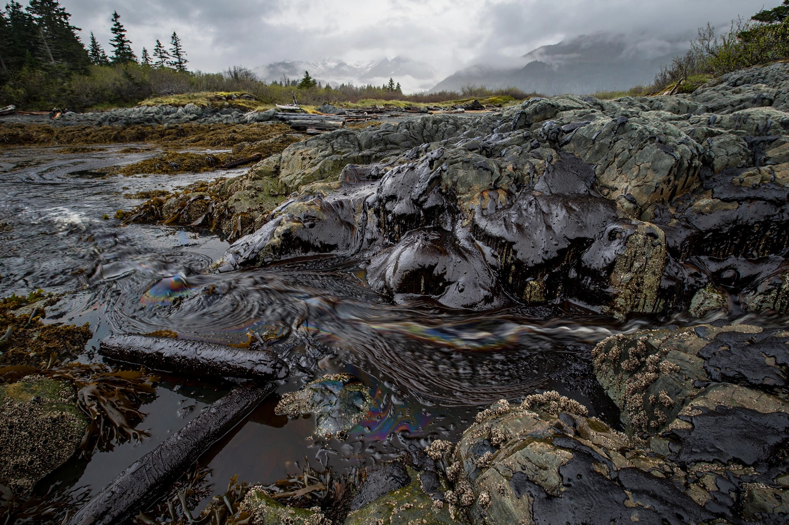

| Date | 24 March 1989 |
|---|---|
| Location | Prince William Sound, Alaska, US |
| Cause | Grounding of the oil tanker Exxon Valdez on Bligh Reef |
| Volume | 10.8 million US gallons (approx. 260,000 barrels) of crude oil |
| Operator | Exxon Shipping Company |
The Exxon Valdez oil spill occurred in Prince William Sound, Alaska, on 24 March 1989. The Exxon Shipping Company oil tanker Exxon Valdez, bound for Long Beach, California, struck Prince William Sound's Bligh Reef shortly after midnight and spilled 10.8 million US gallons of crude oil over the next few days. It is considered one of the most devastating human-caused environmental disasters in history.
The tanker, under Captain Joseph Hazelwood, had deviated from the traffic lane to avoid icebergs; a fatigued third mate was at the helm when the ship ran aground. The spill eventually covered about 1,300 miles of coastline. The remote location, accessible only by helicopter, plane or boat, hampered clean-up efforts, which employed mechanical recovery, high-pressure hot-water washing and chemical dispersants.
Hundreds of thousands of seabirds, thousands of sea otters, hundreds of harbour seals and bald eagles, and billions of salmon and herring eggs were killed. The sound's herring fishery collapsed in 1993, and some species, such as the Pacific herring and pigeon guillemot, had not fully recovered decades later; oil remained in some beaches into the 21st century.
Exxon was fined and agreed to a US$900 million civil settlement. In 1994 a jury awarded US$5 billion in punitive damages, which was reduced on appeal; in 2008 the US Supreme Court cut the award to about US$507.5 million in Exxon Shipping Co. v. Baker. The disaster prompted the Oil Pollution Act of 1990, which phased in double-hull requirements for tankers operating in US waters.